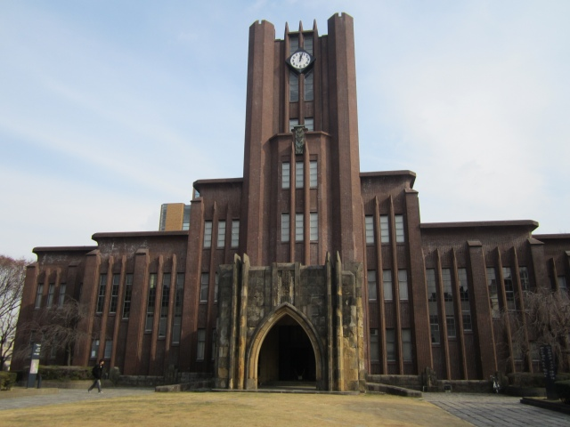

| ・ 第38回冬期講習会「さまざまな分野における光散乱−基礎から応用まで−」 (H24.01.19) | |||
B4、I上君が「さまざまな分野における光散乱」に参加しました。2日間の講習会でしたが、自分の研究に関係する1日目だけ参加です。そういえば、2年前の講習会に、Y名田くん、K野くん、M脇くんの3人で冬期講習会参加してましたね。3人はいろいろ満喫してましたが、今回は卒論提出前で忙しくて日帰りです。 |
|||
|
赤門 |
会場は東大本郷 | ||
|
10時から17時までみっちり |
いよいよ開始 | ||
|
昼休みは構内探索。三四郎池 |
サッカー参加したいな | ||
|

安田講堂 |
すっかり日が暮れました | ||